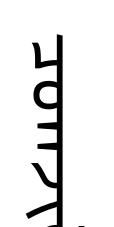

Jile Chaoge | 朝格吉乐

M.S. Student in Statistics, Beijing Technology and Business University
B.S. in Mathematics and Applied Mathematics, Beijing Normal University
Primarily interested in causal inference, with broader interests in mathematical statistics, statistical inference, statistical learning, and machine learning. Currently preparing for PhD applications.
Email: chogjill@126.com
About
I am currently a master's student in Statistics at Beijing Technology and Business University, supervised by Prof. Peng Wu. Before that, I received my bachelor's degree in Mathematics and Applied Mathematics from Beijing Normal University. My training began with a solid foundation in mathematics and then moved toward statistics. Through graduate coursework and ongoing research, I developed interest in causal inference. I am also interested in mathematical statistics, statistical inference, statistical learning, and machine learning. I am currently preparing for PhD applications and hope to continue rigorous research in statistics and related quantitative fields.
Education
Beijing Technology and Business University
M.S. in Statistics, School of Mathematics and Statistics
Beijing Normal University
B.S. in Mathematics and Applied Mathematics, School of Mathematical Sciences
Research Interests
My current research interest is primarily in causal inference, with broader interests in mathematical statistics, statistical inference, statistical learning, and machine learning.
Publications
Published / Accepted
- Qinwei Yang, Jile Chaoge, Jingyi Li, and Peng Wu. Counterfactual harm-aware learning of individualized decisions. Neurocomputing, 2026, 683:133458
Working Papers
- Jile Chaoge, Kesen Han, Fahui Liu, and Peng Wu. Probabilities of Causation for Continuous Outcomes: Bounds and Identification. arXiv:xxx (2026+)
-
Jile Chaoge†, Jingyi Li†, Qinwei Yang, and Peng Wu.
Offline Policy Evaluation and Learning with Harm Constraints.
arXiv: xxx (2026+).
† These authors contributed equally.
- Peng Wu, Jile Chaoge, and Shu Yang. Adaptive Influence-Based Borrowing Framework for Improving Treatment Effect Estimation in RCTs Using External Controls. arXiv:xxx (2026+)
Selected Coursework
Statistics and Modeling
- Statistical Causal Inference and Applications — 100
- Complex Data Analysis and Statistical Modeling — 94
Probability and Computation
- Advanced Probability Theory — 90
- Machine Learning — 91
Research Experience
Approximation and Analysis of Symmetric and Antisymmetric Functions
Undergraduate research project under the National Training Program for Innovation and Entrepreneurship
Awards and Honors
- Outstanding Graduate Student
- Second-Class Graduate Scholarship
- Jingshi Third-Class Scholarship
Academic Service
- Reviewer for AAAI 2026
Skills
Python, R, LaTeX, MATLAB, and C.